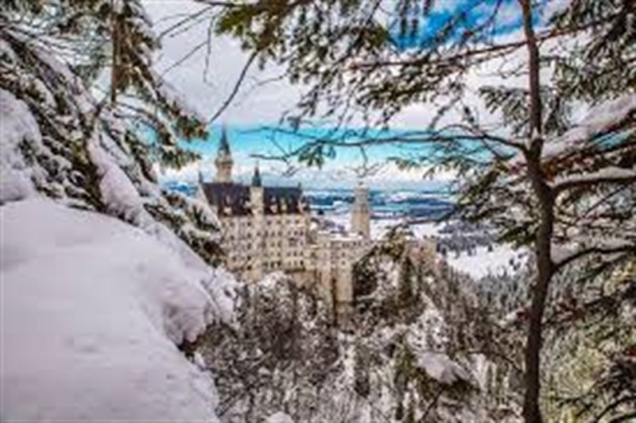
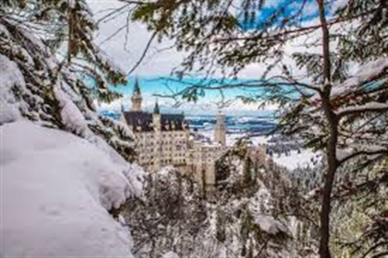

Tarihten bu yana, pek çok medeniyetin, kültürün beşiği olan illerimizden biri Erzurum… Erzurum, Pasinler’in eteklerinde, bir türküler ve masallar diyarıdır. Dadaşlarının namı Anadolu’yu alıp yürümüştür. Surlarının gücüyle bilinen Erzurum Kalesi, kentin asırlardır kabul edilen heybetini bütünler. Palandöken Kayak Merkezi, dünyanın en uzun kayak pistlerini barındırır. Erzurum’un şifalı kaplıcaları ve pınarları doğanın sağaltıcı gücüne inananları konuk eder. Tortum Gölü ve Tortum Şelalesi manzarasıyla insanın düş gücünü zorlar; özellikle ilkbahar aylarında görünüm usta bir yönetmenin bir filmi karesi gibi eşsizdir. Erzurum daha çok Palandöken nedeniyle turist çeker, oysa bu kenti görenler hep daha fazlasını bulabileceklerini bilirler. Gizli değerler vardır, keşfedilmeyi bekleyen… Kitapların, rehberlerin anlatamayacağı, anlatmakta zorlanacağı değerler… Çifte Minareli Medrese’nin içinde kabartmalar, oymalar, örneğin… İnsan emeği ve yaratıcılığının Doğu’nun parlak güneşi ve çetin kışları ile sarmalanarak, bilgi ile halk kültürlerinin uyumlu bir biçimde gelişerek oluşturduğu değerlerdir bunlar. Bu nedenle Erzurum farklı mevsimlerde, farklı heyecanlar yaratabilecek bir kenttir. Görmeden geçmeyin!
Erzurum’da kış sporları sezonu Kasım ayında başlar; Nisan ayının sonu, Mayıs ayının ortası gibi kapanır. Palandöken Kayak Merkezi özellikle Şubat ayında, yarı yıl tatili nedeniyle büyük rağbet görür; çevreye çarpıcı bir hareket gelir. Erzurum kent merkezi, karasal iklim nedeniyle yaz aylarında sakinleşir; halkın bir kısmı yaylaları ya da daha serin dağ eteklerini, yükseltileri tercih eder. Kültür ve tarih amaçlı gelenler, ilkbaharda doğanın uyandığı Nisan, Mayıs aylarını, sonbaharda da iklimin uysallaştığı Eylül, Ekim aylarını tercih ederler. Doğa gezileri, trekking, göl çevresinde geziler için en doğru zaman yine Nisan ve Eylül aylarıdır.
 
